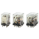

Building Automation
Industrial Automation
Power Automation & Safety


Bangladesh Distributor
Question
What is the approach to perform maintenance for Relays?
Answer
There are two main types of maintenance: corrective maintenance (i.e., inspections and replacements that are performed after a failure has occurred) and preventative maintenance (i.e., inspections and maintenance that are performed before a failure occurs).
Some of the important issues with preventative maintenance is when to perform inspections and replacements, how to know when that is required, and how to determine the timing.
The factors that must be considered when determining maintenance schedules for Relays is the level of importance of the target device, and the required reliability level, when looking at maintenance from the device or system perspective. There are also different types of failure for the different characteristics and items based on the type of Relays.
Relays failure types can be broadly classified into failures from wear, typified by worn out contacts, and deterioration failures, such as layer shorts in coil windings.
In general, once the conditions of use for the Relays have been determined, it is possible to predict maintenance requirements because types of wear, such as contact wear, and the timing of wear related failures are related to the number of operations. On the other hand, deterioration failures, such as layer shorts in coil windings, are greatly affected by the inherent reliability of the Relays being used. The maintenance requirements are affected by use reliability, e.g., operating conditions and on-site environment.
This means that the failures are often different for each case, which makes it difficult to determine a maintenance schedule in advance.
In actual operation, wear and deterioration progress at the same time and it is important to know which type of failure is going to occur first when determining maintenance schedules.
The following items are useful for reference when determining maintenance timing.
| Maintenance timing | Determined by No. of operations | Determined by time | Remarks | ||
| Abrasion | Contact wear | The maintenance timing can be determined from the electrical life curve drawn from load voltage, current, and load type. If there is no applicable electrical life curve, the maintenance timing can be determined from test values from the device. | Yes | --- | If the number of switching operations per unit time can be determined, the number of operations can be replaced by the time. |
| Wear in operating mechanisms | The maintenance timing can be determined from the number of operations in the mechanical life of the Relays. If the mechanical life listed in the performance specifications is a value determined under standard test conditions and the actual operating conditions differ from these standard test conditions, the maintenance timing should be determined based on test values from actual operating conditions. | --- | |||
| Deterioration | Insulation deterioration of coils and coil windings | The life of a coil can be predicted if the temperature in the conditions that the coil is operated under is known. A total of 40,000 hours at 120°C is used as a reference point for most polyurethane copper wire coils. | --- | Yes | --- |
| Contacting stability of contacts | Inherent reliability is affected dramatically by operating conditions and the environment. Maintenance timing can be determined by understanding the operating conditions and environment and performing sampling. | --- | Yes | It is important to know toxic gas concentrations that adversely affect the on-site environment and contact materials. | |
| Deterioration of performance of metallic materials | |||||
| Deterioration of performance of resin materials | |||||
Recommended Products
 MY
MY
New Latching Levers for Circuit Checking Added to Our Best-selling MY General-purpose Relays
LY
Power-switching Compact General-purpose Relays
G3PE (Three-phase)
Compact, Slim-profile SSRs with Heat Sinks. Solid State Contactors for Three-phase Heaters Reduced Installation Work with DIN Track Mounting.
Other General Purpose Relays FAQ
-
The Relay does not operate even when voltage is applied. Why is this?
-
We were using G2R General Purpose Relay to turn a solenoid valve ON and OFF, and sparks at the contact damaged the relay after only about 3 months of use. What caused this, and what kind of countermeasure is there for it?
-
A Relay burned out. Why is this?